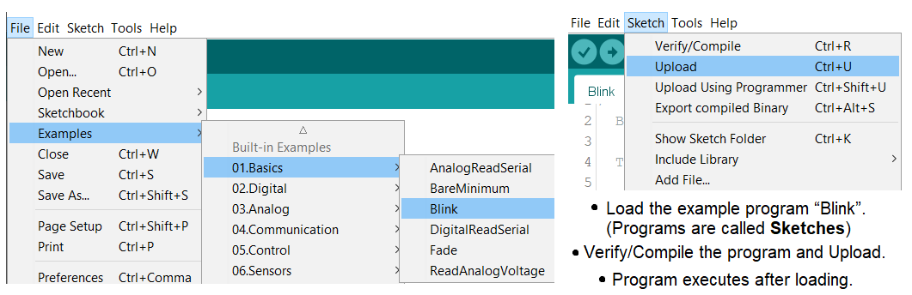
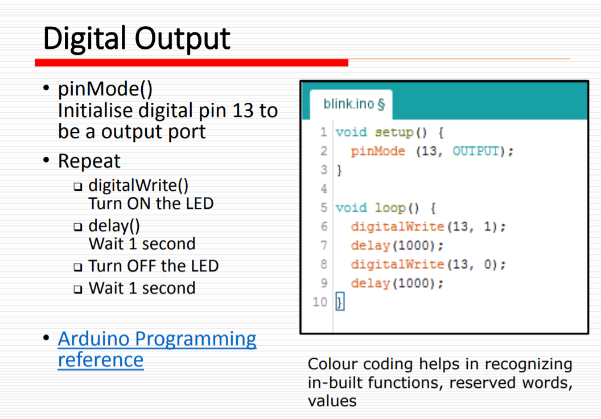

Electronics
A circuit is a closed path or loop around which an electric current flows. The term 'electricity' refers to the flow of electronics in a closed circuit. If the switch is turned on, electricity flows around the circuit. If there is a break anywhere in the circuit (e.g. broken wires, melted fuse), electricity cannot flow.
Formulae / Laws
Ohm's Law: Voltage (V) = Current (I) × Resistance (R)
- Voltage, measured in Volts (V), is the potential difference between two points.
- Current, measured in Amps (A), is the rate of flow of electrical charge past a point.
- Resistance of an object, measured in Ohms (Ω), is a measure of the opposition to the flow of electric current.
This formula is very important because when the effective resistance in the circuit is too low, large current will be passing through the components, causing damage to them or even short circuit.
Kirchhoff's laws
Kirchhoff's current law (1st Law) states that current flowing into a node (or a junction) must be equal to current flowing out of it.
Kirchhoff's voltage law (2nd Law) states that the sum of all voltages around any closed loop in a circuit must equate to zero.
Electrical Components
- Wires: Conductors which resistance is negligible. Usually made up of copper wrapped with an insulator. Wires are used for connections and forming closed circuits.
- Switches: Electrical components that breaks a circuit when manually operated. Made up of two contacts separated by a conductor. When the conductor is closed, the circuit is completed.
- Resistors: Electric components that provides resistance to the flow. They are colour coded, like the ones I have in my Arduino kit are 220Ω and 1kΩ. The colour code table can be found here.
- Diodes: Semi-conductors that allow current to flow in only one direction. I am given Light Emitting Diodes (LEDs) which are special diodes that give off light when the current flows in the correct direction.
- Integrated circuits: Miniaturised electrical circuits that contain thousands of other electrical components (including capacitors and transistors) configured in a particular circuit.
Embedded Programming with Arduino
Embedded Programming is a dedicated computer system with a dedicated function within a larger system to perform a specific task. Examples are smart TVs and rice cookers.
Arduino is an open source platform and the system comprises of software & software tools and hardware. The software/software tools include Integrated Development System (IDE), Arduino programming language (similar to C++), Development & Debugging tool based on Processing and software libraries (open source contributions). The hardware include ATMel processor board, shields (Add-on modules) and sensors, actuators, peripherals
The advantages of using Arduino are it is cheap, cross-platform (Mac, Linux, Windows), simple, clear programming environments using a GUI, and open source & extensible software/hardware.

Arduino Uno is the most common microcontroller board to begin projects. it uses a Atmel Atmega328P processor with a separate programmable interface using another Atmel processor and USB. Sockets are present for interfacing and power, this is when dupont jumper wires are used for connection. Atmel processors are usually programmed via the ISP (In-circuit programmer) and dedicated programmer.
Programming Sketches
Arduino IDE Softawre in 4 steps - Write the code → compile → upload to UNO board → press RESET button and observe results. Drivers for the boards may need to be installed if we bought the cheap UNO boards.
- Using Arduino IDE:
- The UNO board has to be connected to the host computer.
- Launch Arduino IDE and set up the system
- Select the correct board that I am using (Tools > Board)
- Check that the board is connected to the correct port (Tools > Port > select COM port)
Testing a sample program:

Once this sketch is uploaded, you can see that 2 LEDs blinked concurrently. This is because the small LED on the board is in-built and connected to pin13 while the external LED above is manually connected to pin13. Delay means that the code before it will run for that duration, so in this case the LEDs will turn on/off for 1000 microseconds respectively.
setup(): Executed only ONCE after each powerup. The codes to place this function are Initialization codes, to initialise variables and I/O pins. An advice would be to use identifiers to name the I/O pins so that changes can be made easily instead of changing the number repeatedly throughout the sketch. It also makes the code more understandable.
loop(): Executes after the setup() function. It loops infinitely, executing the code within the loop. Some good habits would be using comments denoted by /*...*/ or //, indenting codes for everyone to read clearly, and using UPPERcase to denote constants or defines.
Digital Input/Output: ATMega328 has 14 digital input/output ports. Digital values are defined as 1 (5V) or 0 (0V). Multifunctional ports can perform as digital inputs (default), digital outputs or pulse-width modulation outputs. (Source: lecture notes)

pinMode(pin, MODE): Configures specified pin to behave either as an input or output.
- Modes available
INPUT⇒ digital input mode in high-impedance state.INPUT_PULLUP⇒ digital input mode with internal 20K to 50K Ω pull-up resistor.OUTPUT⇒ digital output mode that is able to source up to 40mA per pin, total of 200mA per chip.
I can never memorise all the functions and the codes, but I am able to search for their purposes and applications in Arduino's website whenever I need to clarify. (https://www.arduino.cc/reference/en/)
TINKERCAD
I am taught how to test out if a circuit can work without connecting to an Arduino board. Tinkercad is a free online CAD tool, as well as designing circuits. It is a way to check if the connection is correct, if there is any short circuits, or if the resistors used are incorrect. This can prevent melting the fuse in the Arduino board, or save time trying to figure out what went wrong.
Most of the components found in my Arduino kit such as LEDs, switches, resistors and many other output and input devices are in Tinkercad. Which is great because I can test out my circuit without worrying about missing components.
I tested out the PIR sensor in my Arduino kit. I copied the code from Adadruit's website and tried it using Tinkercad.
In the first part, when I drag the blue circle (moving object) into the shaded region (detection zone), the serial monitor told me that motion is detected. I dragged it out before it starts capturing movement and brought it back in. Motion is detected once again. If I let the circle stay inside after the PIR sensor starts capturing again, it will trigger the sensor the moment I take it out. In second part, I uploaded the code to my Arduino. The PIR seems to constantly detect motion, hence I adjusted the distance potentiometer at the side. The third part shows how sensitive it is to the speed and size of moving object. The last one is to show that it can detect from a great distance if I adjust the distance potentiometer again.
Assignment
Simple LED control
The first assignment is to perform a simple control of an LED. In Tinkercad, I took out an Arduino board, an LED and a resistor (set to a suitable resistance). The left pin of LED is connected to ground and the right pin is connected to the resistor. Then the other end of resistor connects to pin 6 of the board.
Since this is just a simple sketch, I did not define pin 6 as the LED_pin. I copied and pasted the code and changed the delay time, such that the LED will turn on for 1 second and off for another second, blink 2 more times before it blinks at 200 microseconds for 3 times.
Interface 1 input and 1 output devices
For this task, my input device is a push button switch and my output device is RGB LED.
On my first try, the bulb broke because the current passing through it was too large. I forgot about adding resistors to each 'leg' of the LED. Then I added them in but the LED did not change to red when I pressed the button. Turns out I am missing a VCC connection to the switch, hence no current is flowing through even when the switch is closed.
{kind=link}
{kind=link}
And when I thought I connected everything correctly, the code is written wrongly because I did not define the red and green correctly, so green light came on instead of red. The correct one is on the right, when I pressed the button.
{kind=link}
The code is taken from here and the Modified code is here (RGB.ino)
This is how it should look like (modified version)